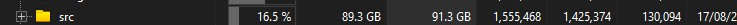
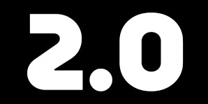

Hi everyone We have some updates for the future
In this blog we will cover these topics
Update Schedule changes
Core Focus
Goals for us and whister
Part 1: Update Schedule Changes
We have decided to change our update schedule to a more flexible one. Instead of releasing updates on a fixed schedule, we will now release updates as soon as they are ready. This means that we will be able to release updates more frequently and with less downtime plus more stable updates
Its been an exciting journey so far!
Part 2: Core Focus
Our core focus is to make whister the best browser for privacy and security. We will continue to work on improving the security and privacy features of whister, as well as adding new features that will make it even more secure and private and more user friendly
We will
Strip out every unnecessary element (google stuff)
Maybe move to a better more non bloated engines
Optimize performance and resource usage
Part 3: Goals for us and whister
Our goal in our spare time is to continue improving whister but also doing more fun stuff in our free time
We usally work in the weekends but sometimes in the weekdays
I am so glad we could make a browser in the first place because its so complicated with all the dependencies chromium has
With all those c++ files the h files to the gn to ninja, Its not that simple what most people think!

Benefits of the Changes
We believe that these changes will allow us to focus on the most important aspects of whister and make it the best browser for privacy and security. We are excited about the future of whister and we hope that you are too!
Bounus!
Whats Next For Whister?
Whister Browser 2.0

We are planning to release Whister Browser 2.0 Rebuilt from scratch as so we can look at the code run multiple tests and making sure its stable
So far as im writting this article We have just started to build it and we are planning to release it in 2027
We are also planning to add snap your tabs feature so you can snap your tabs to the side of the browser and have them open in a new window
Why are we rebuilding Whister?
We are rebuilding Whister because we want to make sure that the code is clean and maintainable. We also want to make sure that we can add new features easily and quickly. We also want to make sure that we can fix bugs quickly and easily.
Another reason is to improve the overall performance and user experience of the browser.
Conclusion
We are excited about the future of Whister and we hope that you are too! We will continue to work hard to make Whister the best browser for privacy and security. We will also continue to listen to your feedback and make changes based on your suggestions. Thank you for your support!